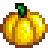
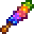
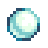
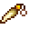
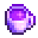

Stardew Valley
6 presentes
 mas 2 pessoas odeiam
mas 2 pessoas odeiam
6 presentes
que todo
morador ama





Presentes 4 a 6
Fragmento prismáticoMinas (andar 100+) e Caverna da Caveira
Pé de coelhodos seus coelhos felizes
Chá de Fruta-Estrelamáquina de prêmios do prefeito
comenta PRESENTE pro guia completo
Cuidado!

Haley
Penny
Duas pessoas odeiam
Haley
Penny
Haley odeia Fragmento prismático
Penny odeia Pé de coelho
Penny odeia Pé de coelho